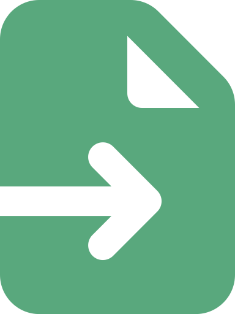
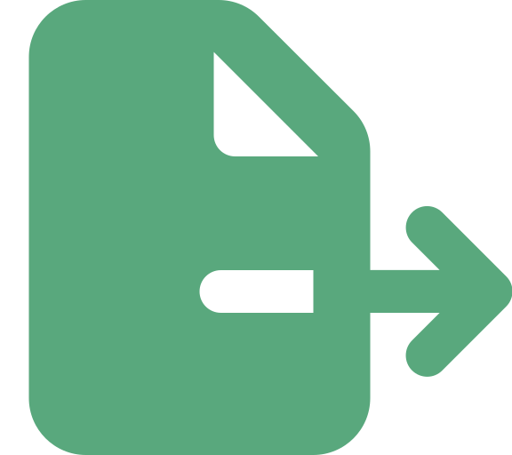

Portada
Universidad de Antioquia · Ingeniería de Sistemas · 2508307
Apertura

Transición
La sesión pasada aprendiste a manejar excepciones con try-catch y a leer/escribir archivos de texto plano y CSV con try-with-resources, cerrando siempre el recurso automáticamente. Hoy das el siguiente paso: en vez de texto suelto o filas separadas por comas, vas a guardar y leer objetos completos, con estructura y anidamiento, usando el formato más usado para intercambiar datos: JSON.
Concepto
JSON (JavaScript Object Notation) es un formato de texto para representar datos estructurados, fácil de leer para humanos y fácil de procesar para programas. A pesar del nombre, no es exclusivo de JavaScript — es un estándar independiente del lenguaje, usado por prácticamente cualquier tecnología moderna (Java, Python, APIs web, bases de datos NoSQL, archivos de configuración).
{
"nombre": "Ana Gómez",
"edad": 21,
"activo": true,
"promedio": 4.35
}Concepto
JSON se construye a partir de dos estructuras que se pueden anidar entre sí:
| Estructura | Sintaxis | Equivalente en Java |
|---|---|---|
| Objeto | { "clave": valor, ... } | Instancia de una clase (POJO) |
| Array | [ valor, valor, ... ] | ArrayList o arreglo |
Los tipos de valor permitidos son: string (entre comillas dobles), number (entero o decimal, sin comillas), boolean (true/false), null, un objeto anidado o un array. No existen fechas ni comentarios como tipos nativos.
Concepto
{
"curso": "Técnicas de Programación",
"estudiantes": [
{ "id": 1, "nombre": "Ana", "notas": [4.5, 3.8, 4.2] },
{ "id": 2, "nombre": "Luis", "notas": [3.9, 4.0, 4.4] }
],
"activo": true
}El array estudiantes contiene objetos, y cada objeto tiene a su vez un array anidado (notas). Esta capacidad de anidar objetos y arrays libremente es justo lo que un CSV plano no puede representar sin trucos.
Concepto
Los tres son formatos de texto para persistir datos, pero cada uno sirve mejor a un tipo de contenido distinto:
| Formato | Mejor para | Limitación principal |
|---|---|---|
| TXT plano | Texto libre, logs, notas | Sin estructura — hay que parsear a mano |
| CSV | Datos tabulares planos (una fila = un registro) | No representa anidamiento ni jerarquías |
| JSON | Datos anidados/estructurados (objetos con listas, objetos dentro de objetos) | Más texto por dato que un CSV equivalente |
Si cada estudiante solo tiene nombre y nota, un CSV alcanza. Si además tiene una lista de notas por corte y datos de contacto anidados, JSON representa esa estructura sin inventar columnas artificiales.
Transición
Java no lee ni escribe JSON de forma nativa — se necesita una librería que convierta entre texto JSON y objetos Java. La opción que usarás en este curso es Gson, la librería de código abierto de Google para ese propósito.
Concepto
Gson es una librería de Google que convierte objetos Java a JSON y viceversa con muy poco código. Para usarla en un proyecto Maven, se agrega la dependencia al pom.xml:
<dependency>
<groupId>com.google.code.gson</groupId>
<artifactId>gson</artifactId>
<version>2.11.0</version>
</dependency>Y se crea una instancia reutilizable en el código:
import com.google.gson.Gson;
Gson gson = new Gson();Concepto
Antes de convertir cualquier cosa a JSON se necesita una clase Java simple —un POJO (Plain Old Java Object)— con atributos privados y sus getters/setters, que representa la estructura del dato. Gson usa los nombres de los atributos como claves del JSON, así que documentarla con Javadoc ayuda a quien la reutilice después.
/**
* Representa a un estudiante inscrito en el curso.
*/
public class Estudiante {
private int id;
private String nombre;
private double promedio;
// getters y setters
}Concepto
Serializar es convertir un objeto Java en su representación de texto JSON, con gson.toJson(objeto). Gson recorre los atributos del objeto y genera automáticamente el texto correspondiente.
Estudiante e = new Estudiante(1, "Ana Gómez", 4.35);
String json = gson.toJson(e);
System.out.println(json);
// Salida:
// {"id":1,"nombre":"Ana Gómez","promedio":4.35}Concepto
Deserializar es el proceso inverso: tomar texto JSON y reconstruir un objeto Java a partir de él, con gson.fromJson(json, MiClase.class). Gson necesita saber a qué clase convertir el texto, por eso se le pasa el .class como segundo argumento.
String json = "{\"id\":1,\"nombre\":\"Ana Gómez\",\"promedio\":4.35}";
Estudiante e = gson.fromJson(json, Estudiante.class);
System.out.println(e.getNombre()); // Ana GómezConcepto
Cuando el JSON es un array de objetos, fromJson(json, Estudiante.class) no alcanza — Java necesita conocer, en tiempo de ejecución, que se trata de una List<Estudiante> y no de un solo objeto. Para eso Gson ofrece TypeToken, que captura ese tipo genérico completo:
import com.google.gson.reflect.TypeToken;
import java.lang.reflect.Type;
Type tipoLista = new TypeToken<List<Estudiante>>(){}.getType();
List<Estudiante> estudiantes = gson.fromJson(json, tipoLista);Sin TypeToken, Java "borra" el tipo genérico en tiempo de ejecución (fenómeno conocido como type erasure) y Gson no sabría a qué clase convertir cada elemento del array.
Transición
Serializar y deserializar en variables de texto es útil, pero el objetivo real es persistir esos datos: guardarlos en un archivo .json que sobreviva al cierre del programa, y volver a leerlos después. Para eso, Gson se combina con las clases de lectura/escritura de archivos que ya viste: FileReader y FileWriter.
Concepto
Gson puede escribir directamente sobre un Writer, evitando construir el String completo en memoria. Se usa try-with-resources para que el FileWriter se cierre automáticamente, tal como viste con los archivos de texto:
try (FileWriter writer = new FileWriter("estudiantes.json")) {
gson.toJson(estudiantes, writer);
} catch (IOException e) {
System.out.println("Error al escribir el archivo: " + e.getMessage());
}Concepto
De la misma forma, Gson puede leer directamente desde un Reader sin que el programador tenga que unir línea por línea el contenido del archivo:
try (FileReader reader = new FileReader("estudiantes.json")) {
Type tipoLista = new TypeToken<List<Estudiante>>(){}.getType();
List<Estudiante> estudiantes = gson.fromJson(reader, tipoLista);
estudiantes.forEach(est -> System.out.println(est.getNombre()));
} catch (IOException e) {
System.out.println("Error al leer el archivo: " + e.getMessage());
}La IOException se maneja igual que con cualquier otro archivo: puede lanzarse si el archivo no existe o no se puede acceder a él.
Concepto
Gson por aplicación (o por clase) — no hace falta crear una nueva cada vez que se serializa o deserializa, es reutilizable.IOException al leer o escribir el archivo, igual que con cualquier operación de E/S — el archivo puede no existir, estar bloqueado o no tener permisos.TypeToken siempre que deserialices una colección, nunca intentes deserializar un array JSON directamente contra MiClase.class.Interacción
En parejas: tienen que guardar en un archivo productos.json una lista de productos, cada uno con id, nombre, precio y una lista de String con sus categorias.
Producto con esos cuatro atributos.try-with-resources que serializa una List<Producto> al archivo.TypeToken.8 minutos · compartan pantalla en su sala de Zoom
Concepto
Por defecto, gson.toJson(objeto) genera JSON compacto, en una sola línea. Para depurar o para archivos que un humano va a revisar, conviene un JSON indentado, usando GsonBuilder:
import com.google.gson.GsonBuilder;
Gson gson = new GsonBuilder()
.setPrettyPrinting()
.create();
System.out.println(gson.toJson(e));
// {
// "id": 1,
// "nombre": "Ana Gómez",
// "promedio": 4.35
// }Síntesis
{ }) y arrays ([ ]), y admite anidamiento — lo que un CSV plano no puede hacer.toJson() (serializar) y fromJson() (deserializar).TypeToken, por el type erasure de los genéricos en Java.FileReader/FileWriter y try-with-resources para persistir JSON en disco, manejando siempre IOException.
Cierre
github.com/google/gson) para casos con fechas o tipos personalizados, que no se cubrieron hoy.Próxima sesión: Generación de PDF con Librerías (Apache PDFBox).